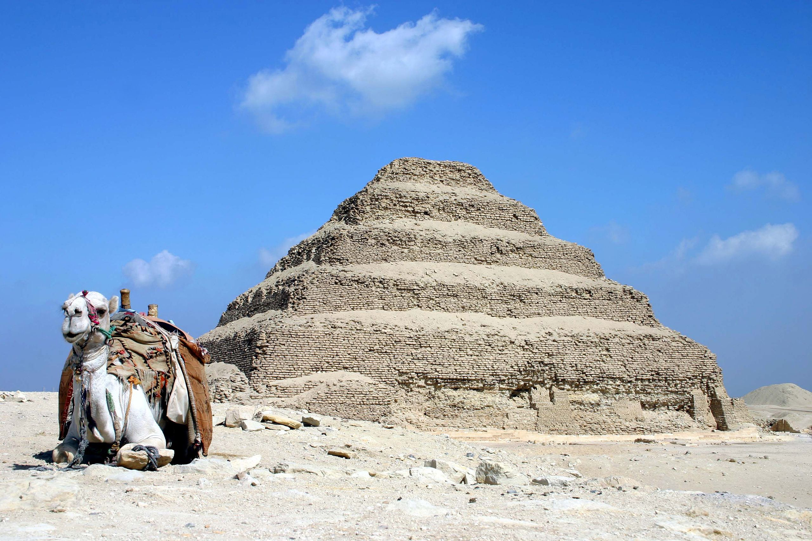
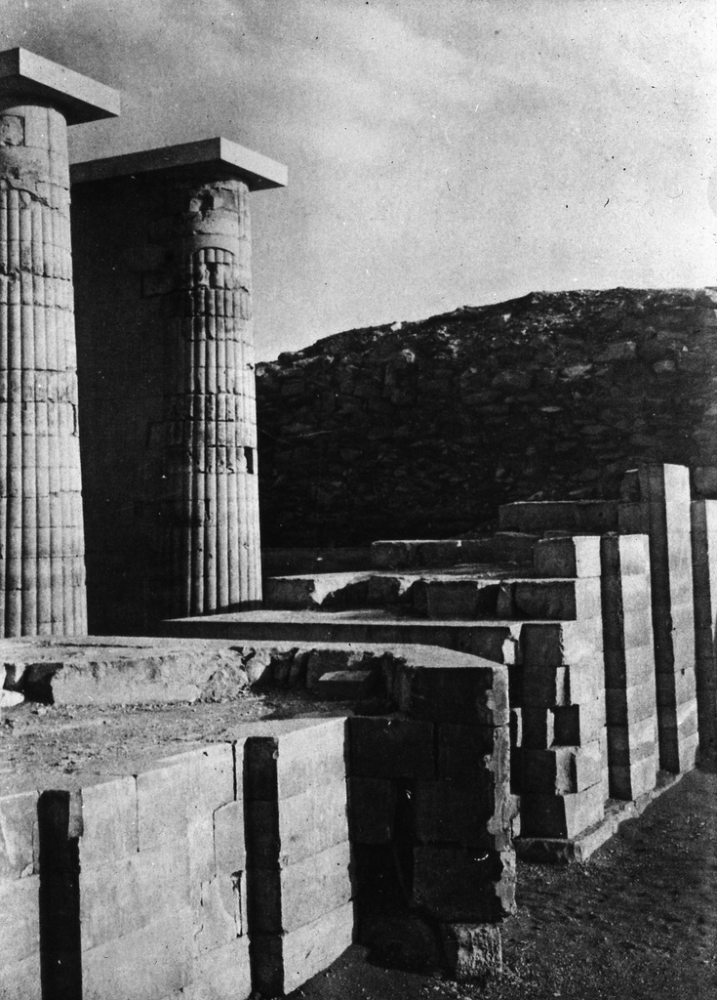
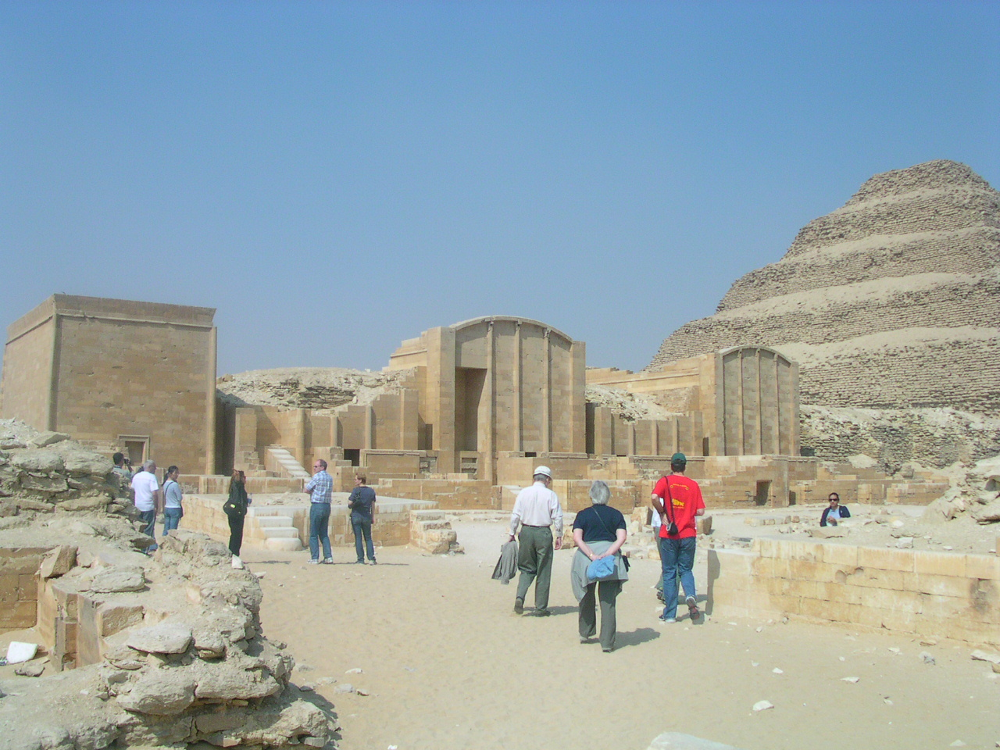

Bent Pyramid (AKA Step Pryamid)
Constructed at Saqqara about 4,700 years ago, the Step Pyramid of Djoser was the first pyramid the Egyptians built.
Djoser, sometimes spelled Zoser (though he was actually called Netjerykhet), was a king of Egypt’s third dynasty. The planning of the pyramid has been attributed to Imhotep, a vizier who would later be deified for his accomplishments.
It started off as a mastaba tomb — a flat-roofed structure with sloping sides — and, through a series of expansions, evolved into a 197-foot-high (60 meters) pyramid, with six layers, one built on top of the other. The pyramid was constructed using 11.6 million cubic feet (330,400 cubic meters) of stone and clay. The tunnels beneath the pyramid form a labyrinth about 3.5 miles (5.5 kilometers) long.

The complex
The pyramid is at the center of a complex 37 acres (15 hectares) in size. This complex is surrounded by a recessed limestone wall that contains 13 fake doorways as well as the real colonnade entrance on the southeast side.
A temple lies on the north side of the pyramid along with a statue of the king. The statue is surrounded by a small stone structure known as a “serdab,” his eyes peeking out through a hole. To the south of the pyramid lies a great court, with an altar and stones identified as boundary markers.
A number of facade “dummy” buildings were constructed in the complex, including a series of chapels in the southeast as well as north and south pavilions on the east side of the pyramid. These structures would have served ritual purposes and, curiously, they appear to have been partly buried by their builders, notes Egyptologist Mark Lehner in his book "The Complete Pyramids."
A dummy chapel at the Hep-Sed court of the Step Pyramid of Djoser.
A dummy chapel at the Hep-Sed court of the Step Pyramid of Djoser.
Credit: Boonsom ShutterStock
In the southeast side of the complex, next to the dummy chapels, is a court that would have allowed the king to enact the Heb-Sed jubilee festival, presumably in the afterlife.
At the southern end of the complex lies the enigmatic “south tomb,” with a chapel. It contains a series of tunnels that mimic those found beneath the pyramid itself. What was buried there is a mystery.

King's burial chamber
Beneath the step pyramid is a bewildering array of tunnels and chambers, the center of which is a 90-foot-deep (28 meters) shaft that, at its bottom, contains the burial chamber of king Djoser. Recent conservation work in the burial chamber reveals fragments of the king’s granite sarcophagus, the names of queens still legible.
“The step pyramid is the only pyramid in the Old Kingdom that 11 of the king’s daughters were buried inside,” said Egyptologist Zahi Hawass, former minister of state for antiquities, in a 2009 video discussing conservation work at the pyramid.
The vault would have initially been decorated with limestone blocks containing five pointed stars, creating a star-filled ceiling. However, for reasons unknown, this decoration was scrapped by its builders in favor of a simpler granite burial chamber.
Tunnels and underground 'palace'
Two passages lead underground and branch off in three directions. They contain three magazine galleries, a special tunnel for food offerings, and an uncompleted chamber that may have acted as an underground “palace” of sorts, albeit one for the afterlife.
Three false doors contain stele showing the king engaged in rituals. The chamber is decorated with thousands of blue faience tiles imitating the reed matting found in the king’s real life palace in Memphis. This chamber beneath the pyramid was hastily completed.
Yet another tunnel, starting on the east side of the pyramid, contains 40,000 stone vessels, many of them belonging to the king’s ancestors. Sarcophagi and human remains were also found.

Modern-day conservation
The step pyramid is in a fragile state with estimates suggesting that, without conservation work, the tunnels beneath the pyramid could collapse, the monument being largely gone in a couple of decades.
An Egyptian-led conservation effort began several years ago and recently a British engineering company called Cintec was called in to aid with efforts. They used giant airbags to hold up the pyramid’s roof while permanent repairs to the structure of the pyramid are carried out.
Mark of respect
The construction of the step pyramid would see the beginning of an ambitious pyramid building program that would culminate with the Great Pyramids at Giza. Imhotep, the man attributed with designing the step pyramid, would eventually be regarded as a sort of god.
King Djoser (Netjerykhet) gave Imhotep a rare honor, allowing his name and titles to be carved on the base of one the king’s statues. One of his titles calls him “chief of sculptors,” a phrase fitting for someone who designed the first Egyptian pyramid.